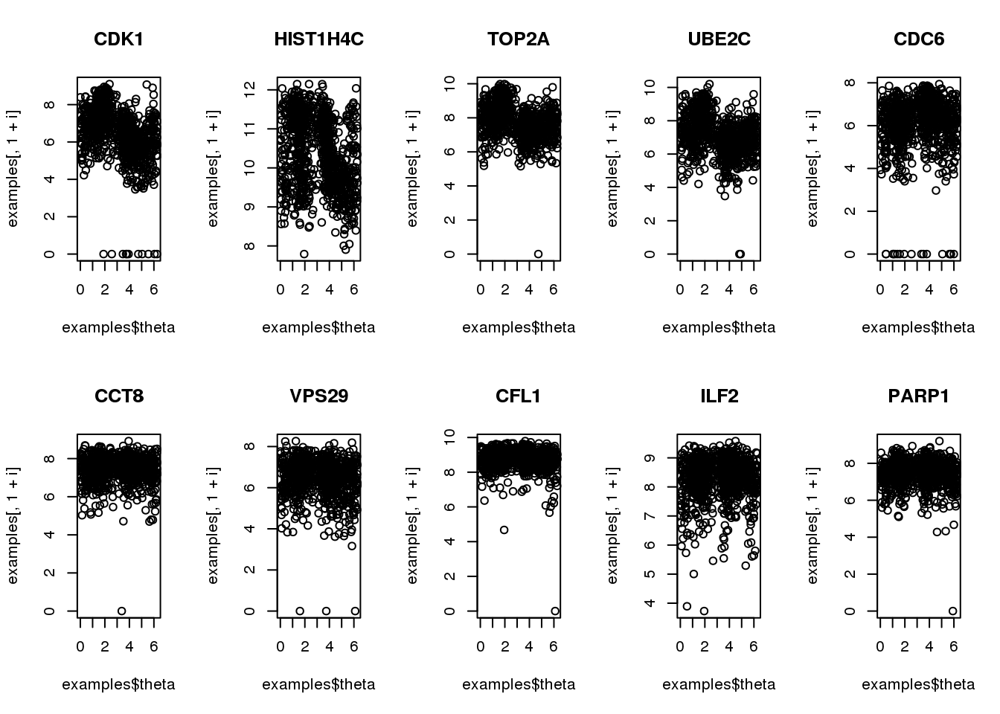
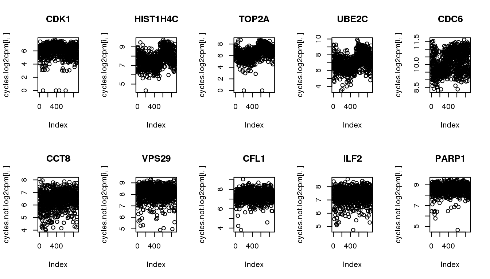
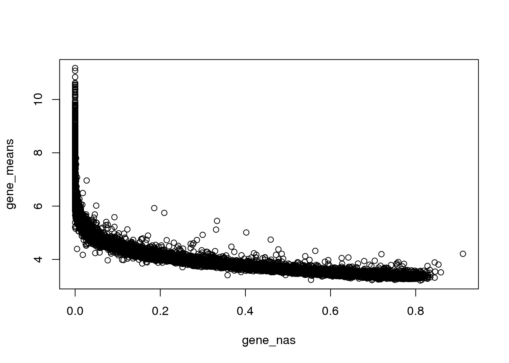
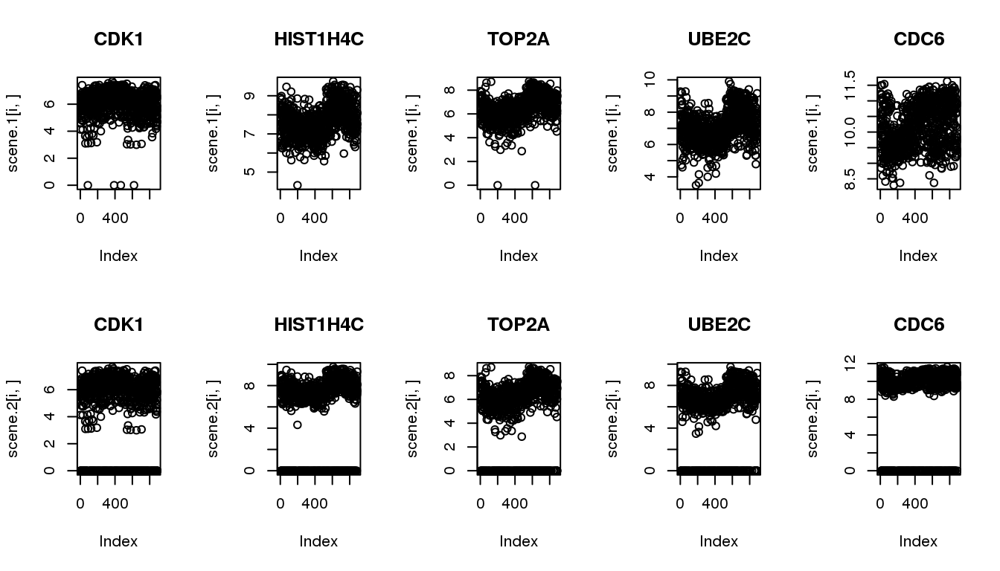
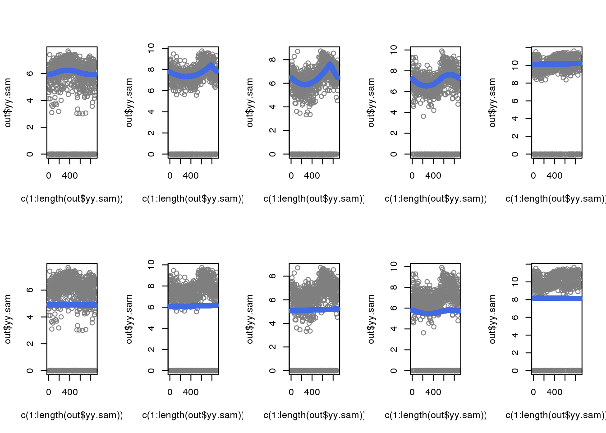

Last updated: 2018-05-07
Code version: 41ea88d
Packages
library(circular)
library(conicfit)
library(Biobase)
library(dplyr)
library(matrixStats)
library(genlasso)Load data
df <- readRDS(file="../data/eset-final.rds")
pdata <- pData(df)
fdata <- fData(df)
# select endogeneous genes
counts <- exprs(df)[grep("ENSG", rownames(df)), ]
log2cpm.all <- t(log2(1+(10^6)*(t(counts)/pdata$molecules)))
macosko <- readRDS("../data/cellcycle-genes-previous-studies/rds/macosko-2015.rds")
theta <- readRDS("../output/images-time-eval.Rmd/theta.rds")
log2cpm.all.ord <- log2cpm.all[,order(theta)]
source("../code/utility.R")
source("../code/npreg/npreg.methods.R")–
Consider 5 genes previously identified to have cyclical patterns and 5 genes previously identified to not have cyclical patterns. Note that there’s a discrepany (albeit small) between the samples that was used to identify cyclical patterns and the samples that are in the finalized data.
examples <- readRDS("../output/npreg-methods.Rmd/cyclegenes.rds")
library(biomaRt)
ensembl <- useMart(biomart = "ensembl", dataset = "hsapiens_gene_ensembl")
symbols <- getBM(attributes = c("hgnc_symbol",'ensembl_gene_id'),
filters = c('ensembl_gene_id'),
values = colnames(examples)[-1],
mart = ensembl)
symbols <- symbols[match(colnames(examples)[-1], symbols$ensembl_gene_id),]
par(mfrow=c(2,5))
for (i in 1:10) {
plot(examples$theta,
examples[,1+i], main = symbols$hgnc_symbol[i])
}
Get ENSG IDs.
cycles <- symbols[1:5,]
cycles.not <- symbols[6:10,]Get these genes from the updated data.
cycles.log2cpm <- log2cpm.all.ord[rownames(log2cpm.all.ord) %in% cycles$ensembl_gene_id,]
cycles.not.log2cpm <- log2cpm.all.ord[rownames(log2cpm.all.ord) %in% cycles.not$ensembl_gene_id,]confirm pattern in the udpated dataset.
par(mfrow=c(2,5))
for (i in 1:5) {
plot(cycles.log2cpm[i,], main = cycles$hgnc_symbol[i])
}
for (i in 1:5) {
plot(cycles.not.log2cpm[i,], main = cycles.not$hgnc_symbol[i])
}
As expected, genes with many zeros tend to have lower mean non-zero molecule count.
Note that at gene mean log2cpm of 4, the average molecule count is about 16 across the 880 samples, which is not many.
log2cpm.all.impute <- log2cpm.all
ii.zero <- which(log2cpm.all == 0, arr.ind = TRUE)
log2cpm.all.impute[ii.zero] <- NA
gene_nas <- rowMeans(log2cpm.all==0)
gene_means <- rowMeans(log2cpm.all.impute, na.rm=TRUE)
plot(x=gene_nas, y=gene_means)
The goal of simulation is to compare the methods in their ability to recover cyclical patterns despite of zero observations.
Scenario 1: original data
Scenario 2: subsample to include 20% missing
N <- ncol(log2cpm.all)
scene.1 <- cycles.log2cpm
scene.2 <- do.call(rbind, lapply(1:nrow(cycles.log2cpm), function(g) {
yy <- cycles.log2cpm[g,]
numzeros <- round(N*0.2)
numzeros <- numzeros - sum(yy==0)
which.nonzero <- which(yy!=0)
ii.zeros <- sample(which.nonzero,numzeros, replace = F)
yy[ii.zeros] <- 0
return(yy)
}))
par(mfrow=c(2,5))
for (i in 1:5) {
plot(scene.1[i,], main = cycles$hgnc_symbol[i])
}
for (i in 1:5) {
plot(scene.2[i,], main = cycles$hgnc_symbol[i])
}
out.1: excluding zero
out.2: including zero
out.1 <- lapply(1:5, function(i) {
yy <- scene.2[i,]
theta.sam <- theta
out.trend <- fit.trendfilter(yy=yy, pos.yy=c(1:length(yy)))
return(list(yy.sam=yy,
theta.sam=theta.sam,
out.trend=out.trend))
})
out.2 <- lapply(1:5, function(i) {
yy <- scene.2[i,]
out.trend <- fit.trendfilter.includezero(yy=yy, pos.yy=c(1:length(yy)))
return(list(yy.sam=yy,
theta.sam=theta,
out.trend=out.trend))
})
saveRDS(out.1, file = "../output/npreg-trendfilter-prelim.Rmd/out1.rds")
saveRDS(out.2, file = "../output/npreg-trendfilter-prelim.Rmd/out2.rds")When including zeros in the fitting, the previously cyclical trend disappeared.
out.1 <- readRDS(file = "../output/npreg-trendfilter-prelim.Rmd/out1.rds")
out.2 <- readRDS(file = "../output/npreg-trendfilter-prelim.Rmd/out2.rds")
par(mfrow=c(2,5))
for (i in 1:5) {
out <- out.1[[i]]
plot(c(1:length(out$yy.sam)), out$yy.sam, col = "gray50")
with(out$out.trend,
points(trend.pos, trend.yy, col = "royalblue"), cex=.5, pch=16)
}
for (i in 1:5) {
out <- out.2[[i]]
plot(c(1:length(out$yy.sam)), out$yy.sam, col = "gray50")
with(out$out.trend,
points(trend.pos, trend.yy, col = "royalblue"), cex=.5, pch=16)
}
sessionInfo()R version 3.4.1 (2017-06-30)
Platform: x86_64-redhat-linux-gnu (64-bit)
Running under: Scientific Linux 7.2 (Nitrogen)
Matrix products: default
BLAS/LAPACK: /usr/lib64/R/lib/libRblas.so
locale:
[1] LC_CTYPE=en_US.UTF-8 LC_NUMERIC=C
[3] LC_TIME=en_US.UTF-8 LC_COLLATE=en_US.UTF-8
[5] LC_MONETARY=en_US.UTF-8 LC_MESSAGES=en_US.UTF-8
[7] LC_PAPER=en_US.UTF-8 LC_NAME=C
[9] LC_ADDRESS=C LC_TELEPHONE=C
[11] LC_MEASUREMENT=en_US.UTF-8 LC_IDENTIFICATION=C
attached base packages:
[1] parallel stats graphics grDevices utils datasets methods
[8] base
other attached packages:
[1] biomaRt_2.34.2 genlasso_1.3 igraph_1.2.1
[4] Matrix_1.2-10 MASS_7.3-47 matrixStats_0.53.1
[7] dplyr_0.7.4 Biobase_2.38.0 BiocGenerics_0.24.0
[10] conicfit_1.0.4 geigen_2.1 pracma_2.1.4
[13] circular_0.4-93
loaded via a namespace (and not attached):
[1] progress_1.1.2 lattice_0.20-35 htmltools_0.3.6
[4] stats4_3.4.1 yaml_2.1.18 blob_1.1.0
[7] XML_3.98-1.10 rlang_0.2.0 pillar_1.2.1
[10] glue_1.2.0 DBI_0.8 bit64_0.9-7
[13] bindrcpp_0.2 bindr_0.1.1 stringr_1.3.0
[16] mvtnorm_1.0-7 evaluate_0.10.1 memoise_1.1.0
[19] knitr_1.20 IRanges_2.12.0 curl_3.1
[22] AnnotationDbi_1.40.0 Rcpp_0.12.16 backports_1.1.2
[25] S4Vectors_0.16.0 bit_1.1-12 digest_0.6.15
[28] stringi_1.1.7 grid_3.4.1 rprojroot_1.3-2
[31] tools_3.4.1 bitops_1.0-6 magrittr_1.5
[34] RCurl_1.95-4.10 tibble_1.4.2 RSQLite_2.0
[37] pkgconfig_2.0.1 prettyunits_1.0.2 assertthat_0.2.0
[40] rmarkdown_1.9 httr_1.3.1 R6_2.2.2
[43] boot_1.3-19 git2r_0.21.0 compiler_3.4.1 This R Markdown site was created with workflowr